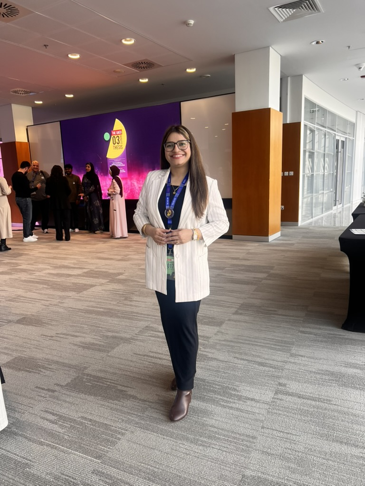
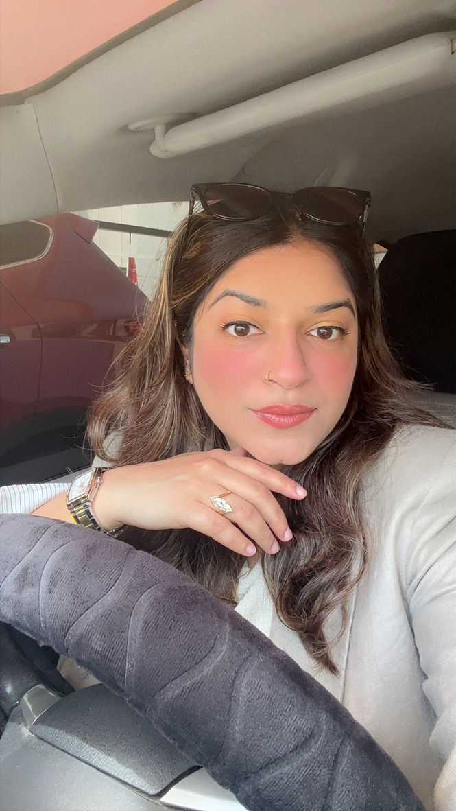

Population Genomics
Using genome-wide SNP data to quantify genetic structure, diversity, differentiation, connectivity and demographic patterns.
Population Genomics · Bioinformatics · Marine Science
I investigate genetic diversity, connectivity and evolutionary patterns in marine organisms by integrating next-generation sequencing, computational biology and environmental science.


About
I am a PhD candidate in Cellular and Molecular Biology at the United Arab Emirates University. My doctoral research uses genome-wide SNP data and population-genomic analyses to understand diversity, connectivity, differentiation and evolutionary dynamics in Arabian Gulf marine fishes.
My work spans the complete research process—from biological sampling and molecular workflows to high-performance computing, variant filtering, statistical analysis, visualisation and biological interpretation. I also have experience in environmental toxicology and trace-element research in marine organisms.
Research focus
How are marine populations connected? Where does genomic differentiation emerge? How do environmental conditions and human pressures influence biodiversity?
Using genome-wide SNP data to quantify genetic structure, diversity, differentiation, connectivity and demographic patterns.
Translating genomic evidence into insights relevant to fisheries management, biodiversity conservation and marine-resource sustainability.
Studying trace elements and environmental stressors in marine organisms, including implications for exposure and seafood safety.
Learning hub
Concept-focused guides for students and early-career researchers, from DNA extraction to ddRAD sequencing and population-genetic interpretation.
Understand lysis, silica-column purification, DNA quality assessment and common causes of low yield.
Learn how PstI and MseI digestion, adapters, barcodes, size selection and Illumina sequencing create SNP datasets.
Follow the journey from FASTQ reads through alignment, filtering, quality control and population-genomic analysis.
Selected projects
End-to-end ddRAD-seq research across two marine fish species, including read processing, alignment, SNP discovery, filtering, population structure, genetic diversity, differentiation, connectivity and effective population-size analyses.

Development and troubleshooting of Linux-, R-, Bash- and HPC-based workflows for large-scale genomic datasets, quality assurance and publication-ready visualisation.
Assessment of essential and potentially toxic elements to examine environmental exposure, physiological regulation, ecological relevance and seafood-safety implications.
Technical expertise
I combine molecular biology, computational workflows, statistical genetics and scientific communication.
ddRAD-seq, SNP discovery, variant filtering, population structure, genetic diversity, FST, DAPC, ADMIXTURE, PCA and effective population size.
STACKS, PLINK, VCFtools, ADMIXTURE, adegenet, dartR, NextGenMap, Linux, Bash, HPC environments and reproducible workflows.
R programming, data cleaning, statistical genetics, multivariate analysis, scientific visualisation and quality-control diagnostics.
Marine sampling, DNA extraction, trace-element assessment, heavy-metal research, ecological interpretation and environmental-risk context.
Research journey
Marine sampling, DNA extraction, molecular workflows and environmental measurements.
ddRAD-seq data generation, quality control, reference alignment and SNP discovery.
Population structure, differentiation, diversity, connectivity and demographic inference.
International research collaborations in conservation genomics, environmental genomics and marine adaptation.
Contact
I am interested in research fellowships, visiting-research programmes, research positions and future postdoctoral collaborations in genomics, bioinformatics, marine science and environmental research.